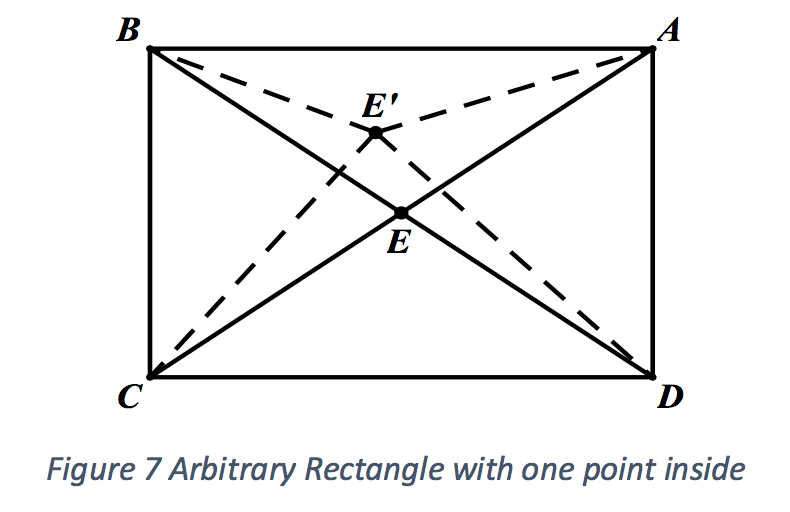

By developing relevant lemmas and theorems, this paper investigates the Steiner Tree Problem (STP) that concerns four points forming a convex quadrilateral. Creating an original recursive algorithm that has much better runtime performance than existing algorithms, this project views the STP from a completely new mathematical perspective and gives solutions of better accuracy and runtime complexity in four-point situations. The paper was inspired by a real-life problem: what is the most optimal placement of roads that connect four cities in Tibet, which achieves minimum costs? By using graph theory, the paper extracts and models this problem into a mathematical problem of determining the minimum total distance involving four different points in a plane. Specifically, the research question is hence formed as "how to solve the Steiner Tree problem in quadrilaterals using recursive algorithms?”. With the Fermat Point as the fundamental theorem in triangle case, this paper logically establishes various lemmas and theorems to investigate and generalize the Euclidean Steiner Tree problem from triangles, rectangles to arbitrary convex quadrilaterals. After reducing the numerous situation to two-point case, this project successfully proposes and proves an original recursive algorithm based on mathematical induction to determine the exact locations of the two points in arbitrary convex quadrilateral case by infinite manipulation of finding Fermat Points. After proving the validity of the two points found via the original recursive algorithm using the technique of proof by contradiction, this paper provides a Python implementation of the original recursive algorithm and examines the runtime complexity further in detail.
Modern society stresses on economization for industry activities. There are countless situations which need to be optimized. For instance, Tibet is one of the least developed provinces in China and much money was spent on building infrastructures there. In figure 1, Nagqu, Lhasa, Nyingchi and Shannan are four main cities in Tibet and goods is difficult to be transferred among the cities since only few roads connecting the cities and there is even no road between Nagqu and Nyingchi. Chinese government is building new roads there to facilitate the transportation among the cities.
Instantly, several possible “optimal” arrangements appear (Figure 2). Is it simply
connecting these four cities to form a quadrilateral? Is it that there is a certain point ùëÉ
somewhere served as a road junction connecting four cities? Or some other ways of connecting?
With all these wondering and possibilities, the real-life problem is converted into a mathematical problem of finding the minimum sum of distance in various situations. The Fermat point The Fermat point of a triangle is a point that the total distance from the point to the triangle’s three vertices is minimized.
Figure 3 is the construction of the Fermat point of ‚àÜùê¥ùêµùê∂, where triangles ùë®ùë¨ùë™ , ùë™ùë≠ùë© and ùë®ùë´ùë© are equilateral. Point ùëÉ, the intersection of ùë®ùë≠ , ùë™ùë´ and ùë©ùë¨ , is the Fermat point
of ‚àÜùê¥ùêµùê∂.
However, the Fermat points and the intersections might not be applicable for n-side polygons. Thus, through thorough researching, the Steiner Tree Problem (STP) is found to address these problems.
The Euclidean Steiner Tree Problem A certain type of problem that aims to find a set of points in a geometric network ùëá = (ùëâ, ùê∏), so that \(\sum_{e \in E}^{} |e|\) is minimized (ùëâ indicates the vertices set, ùê∏ indicates the edges set and |ùëí| represents the Euclidean length (The distance between two points is the length of the path connecting them4) of edge ùëí ∈ ùê∏).
Steiner Points have three properties: no two edges can join at a point with an angle smaller than 120°; a Steiner Tree has no crossing edges; each Steiner point in the Tree is of degree of exactly three.
 n figure 47, the three red points are Steiner points which satisfy the three properties mentioned above.
With the definition and properties of the Steiner Tree Problem, this paper proceeds to explore methods to solve Steiner Tree Problem in general.
n figure 47, the three red points are Steiner points which satisfy the three properties mentioned above.
With the definition and properties of the Steiner Tree Problem, this paper proceeds to explore methods to solve Steiner Tree Problem in general.
Based on previous real-life problem and the background information, this paper aims to investigate the Steiner Tree Problem concerning three points and four points forming a convex quadrilateral in a plane. In other words, the paper came up with the research question that
How to solve the Steiner Tree problem in convex quadrilaterals using efficient recursive algorithms?
To determine the locations for Steiner points, many articles about computer programming predict the positions, a non-deterministic polynomial-time hard problem (NP-Hard), by different algorithms like Prim’s algorithm and Kruskal’s algorithm. could efficiently find the minimum spanning tree given vertices and edge weights. However, those algorithms are not able to determine the location of two extra Steiner points – they are only famous for finding the minimum spanning tree (MST) given vertices and edge weights. So brute force is necessary for those algorithms to find the locations of extra Steiner points, which makes the overall runtime extremely inefficient. Besides, the current methods are just very accurate approximations. A pure mathematical proof is needed to provide an alternate way to create a new algorithm or improve the existing algorithms which could predict the exact locations for Steiner points in a more efficient way, which adopts a different method from topology used in some published articles.
The real-life problem can be modelled into a simple finite graph ùê∫ = (ùëâ, ùê∏) including ùëâ = \(\{v_1, v_2, v_3, \dotsc, v_n\}\), the set of vertices representing different cities or additional new road junctions, and ùê∏ = \(\{e_1, e_2, e_3, \dotsc, e_m\}\), the set of edges denoting various potential roads to be constructed between two vertices (cities or road junctions). With graph theory, other concepts of path, circuit and tree could also be introduced to systemize and simplify the real-life problems.
Using the real-life problem as an example,
The three figures above illustrate how a Tree is modelled from the leftmost figure which shows the four cities forming a quadrilateral. The simple graph could be modelled in to a tree ùê∫ consisting four vertices (cities) \(v_1, v_2, v_3, v_4\), and five edges (roads) \(e_1, e_2, e_3, e_4, e_5\) that the simple graph ùê∫ has no simple circuit.
To make the goal clear, ùëÜ is defined based on the modelling via graph theory.
Definition 1 I define ùëÜ as the sum of lengths of all the edges in a tree in a simple graph G.
(i.e. ùëÜ = \(|e_1|+|e_2|+\cdots+|e_n|\) for a tree consisting ùëõ edges.)
Before introducing the original proof for the quadrilateral case, here is the simplified proof for the triangle case based on existing methods. Understanding the concept of this section will serve as a basic result and help in the original proof later in rectangular and convex quadrilateral cases.
Theorem 1 In any given triangle ùê¥ùêµùê∂, S is minimized when the point inside triangle is
its Fermat point.
This is proved in appendices by geometric construction, vectors, sine rule and partial differential equations.
Hence, as in figure 6, the Steiner point ùëÉ for a triangle whose three interior angles are less or equal to 120¬∞ is located inside the triangle which satisfy that
$$\angle BPC = \angle APC = \angle BPA = 120^{\circ}\ $$
which is the triangle’s Fermat point.
Based on the triangle solution, this paper will now extend the analysis to the quadrilateral case. Applying the triangle method on arbitrary quadrilateral, it becomes extremely difficult since too many variables will appear in the partial differential equations, which is unsolvable. Thus, a geometric manipulation might be adopted here to simplify and further investigate the rectangle case, starting with Lemma 1 concerning the number of points inside the triangle.
Lemma 1 For the case of rectangles, the minimum value of ùëÜ is obtained when there are two points inside the rectangle.
Proof The intersection of the two diagonals is the point that minimizes ùëÜ.

In figure 7, applying Triangle Inequality Theorem,
$$ AE' + CE' > AC $$
$$ BE' + DE' > BD $$
Therefore,
To further extend the earlier result from rectangles to convex quadrilateral, the rectangle method is applied in a more general case – convex quadrilateral case. However, as quadrilaterals have arbitrary sides and angles, the rectangular strategy is not applicable anymore. Thus, this paper will use the idea of continuous optimization and provide an original proof here, employing various techniques such as recursive algorithms (page 18-20), mathematical induction (page 21), concept of limits and proof by contradiction (page 25-28), which is not in existing literature review.
The overview of the proof is listed below:
1. Reducing all the possible scenarios to the two-point case.
2. Using recursive algorithm and Mathematical Induction to prove that exact Steiner points can be obtained.
3. Using limits, to establish that the two Steiner points found will generate the minimum total distance (\(S\)).
4. Use proof by contradiction to show that no other more optimal points can be found.
Lemma 4
For a convex quadrilateral, \(S_min\) is obtained when there are two points inside the quadrilateral.
Proof
Given only one point inside the convex quadrilateral, the intersection of the two diagonals will be the point that minimizes ùëÜ.
In figure 18 above, applying Triangle Inequality Theorem ,
$$ AE' + CE' > AC $$
$$ BE' + DE' > BD $$
Thus,
$$ BE + AE' + CE' + DE' > BE + AE + CE + DE $$
Hence, for any convex quadrilateral with one point inside, the intersection of twodiagonals will be the point that creates the minimum value for S.
'"If more than one point are in quadrilateral ABCD (figure19), without losing generality, it can be assumed that ∠BEC < 90° <∠AEB. Since both ∠BEC and ∠AED are smaller than 120°, Fermat points P2 and P1 could always be found for both ΔAED and ΔBEC so that
$$BP_1 + CP_1 + P_1E < BE + CE and AP_2 + DP_2 + EP_2 < AE + DE.$$
Notice P1E and P2 do not need to be collinear, if not, connecting P2 do not need to be collinear, if not, connecting P1 and P2, P1E + P2E > P1P2 always holds in ΔP1EP2.
For three or more points in the convex quadrilateral (figure 20), one of the points that is extra can always be spotted and the values of S would decrease by eliminating the point(P2 here). '"
Hence, for any S of one-point cases and three-or-more-point cases, a smaller value of S will always exist using two points in the given convex quadrilateral.
Given that only two-point cases are considered, this paper creates an original recursive algorithm to gradually reduce S. For quadrilateral ABCD:
 '"
'"
The flowchart of the recursive process is shown below,
'"
Lemma 5En,Fan,Fbn can always be found for all n ∈ \( \mathbb{N}\) and ∠AEnB ∠CEnD ≤ 120°
Proposition:
En,Fan,Fbn can always be found for all n ∈ \( \mathbb{N}\) and ∠AEnB ∠CEnD ≤ 120°
The Basis:
Given the position of E0 assuming ∠AEnB ∠CEnD ≤ 120° without losing generality, Fa1,Fb1 can always be found since ΔAE0B,ΔCE0D exist.
The Inductive Step:
Assume Ek exists and ∠AEkB,∠CEkD ≤ 120° for some k ∈ \( \mathbb{N}\).
Fak+1,Fbk+1 exist and are Fermat points of triangles whose largest angles are no bigger than 120°, so ∠AFak+1B, ∠CFbk+1D = 120°.
For a point Ek+1 on Fak+1'
∠AEk+1B ≤ ∠AFak+1B = 120°
∠CEk+1D ≤ ∠CFbk+1D = 120°
By mathematical induction, En Fan and Fbn could always be found and the lemma is proben.
Lemma 5 proves that Fermat points with angles bigger than 120° are not involved in this algorithm. Thus, all discussions below only concern Fermat points with 120° angles.
This algorithm creates a monotonically decreasing sequence of the value of S after each manipulation of generating a new pair of Fermat points.
Definition 2 Let Fa0, Fb0 be two arbitrary points in a convex quadrilateral ABCD. Fan, Fbn are the Fermat points of ΔABEn-1 ΔCDEn-1 respectively for n ∈ \( \mathbb{N}\) where En is a point on Fan. {Sn} forms a sequence where Sn = AFan + BFan + CFbn + DFbn + FanFbn.
Lemma 6 {Sn} is a monotonically decreasing sequence.
Proof Consider Fan-1,Fbn-1 in ABCD below. For any point En-1 on Fan-1Fbn-1 such that ∠AEn-1B, ∠CEn-1D ≤ 120°, construct ΔABEn-1 and ΔCDEn-1. Two Fermat points Fan,Fbn of the two new triangles are found.

To prove that S reduces after each recursion, what is needed to be proven is Sn ≤ Sn-1 holds for all positive integer value of n.
In figure 29, Sn is the sum of lengths of red edges and Sn-1 is the sum of lengths of the green edges.En-1 is a random point on Fan-1Fbn-1 and Fan and Fbn are the Fermat points of ΔABEn-1 and ΔCDEn-1 respectively.
By Triangle inequality,
FanFbn ≤ FanEn-1 + FbnEn-1
Applying the property of Fermat point of ΔABEn-1
AFan + BFan + FanEn-1 < AFan-1 + BFan-1 + Fan-1En-1
Applying the property of Fermat point of ΔCDEn-1
CFbn + DFbn + FbnEn-1 < CFbn-1 + DFbn-1 + Fbn-1En-1
Summing up both sides of the three inequalities above,
FanFbn + AFan + BFan + FanEn-1 + CFbn + DFbn + FbnEn-1 < FanEn-1 + FbnEn-1 AFan-1 + BFan-1 + Fan-1En-1 + CFbn-1 + DFbn-1 + FbnEn-1
Since
Thus
holds for all
Lemma 7
Proof
Since
If
If
So based on theorem 3, since
Besides, by applying the second lemma of the monotone convergence theorem, which states
that
“If a sequence of real numbers is decreasing and bounded below, then
its infimum is the limit.”
[3]
Since
Theorem 4
Proof
Let
It is known that
Then the recursive algorithm could be proven to be valid if the value it
converges to is the same as the minimum value in all possibilities, which
is
if \(\lim\limits_{n \to \infty} S_n \neq S_{min}\) \(inf\{S_n\} > inf\{S\}\) so \(inf\{S_n\} \in \{S\}\). This means a two-point set {W,X} corresponding to \(inf\{S_n\}\) can always be found. Let Smin correspond to {Y,Z}. As \(inf\{S_n\}\) = \(inf\{S_n\} = \lim\limits_{n \to \infty} S_n\), for any point E on ray WX(no matter inside ABCD or outside ABCD), Fermat points of \(\bigtriangleup AEB, \bigtriangleup CED\) are still W,X. Otherwise the algorithm produces a smaller S, which contradicts. As Fermat point is the three 120 °, for any point F on line WX but not on the segment (Figure 30), the Fermat point on the other side of the segment still preserves. Similarly, for Smin Y,Z preseves for triangles formed by any point on YZ and one of them preserves for a point on the line but not segment. Line WX,YZ cannot be parallel as all angles on each Fermat point must be 120°. Similarly, the four points must be distinct. If they intersect at G, without losing generality, let ΔAGB be the triangle of which the Fermat point preserves. Then each set contributes one Fermat points in ΔAGB that are distinct as in figure 31. Uniqueness of Fermat points leads to contradiction. Thus, \(inf\{S_n\}\) = \(inf\{S_n\}\) and \(\lim\limits_{n \to \infty} S_n = S_{min}\). It is thus proven that the proposed algorithm can find positions of the two Steiner points in a convex quadrilateral. With the idea of Finding Fermat points recursively, the following Python implementation provides an algorithm which receives coordinates of four points as input and returns output as coordinates of the two Steiner Points as well as the number of recursive calls made for the purpose of runtime analysis. (Code below generated in planetB)
Existing algorithms are mainly ‚Äúbrute force‚Äù algorithms based on Prim‚Äôs algorithm and Kruskal‚Äôs algorithm. Undoubtedly, these two algorithms are efficient in finding Minimum Spanning Trees but their runtime complexity in solving STP is still extremely high because the problem involves extra points (Steiner Points) other than existing vertices. This fact makes the STP a NP-Hard problem. However, the recursive algorithm has a much better runtime performance in four-point convex situations. Input coordinates: (0,50), (0,0), (100,0), (100,50) Output coordinates of Steiner Points: (14.4337,24.9999), (85.5662,24.9999) Table of Accuracy versus number of recursion counts: Input coordinates: (-60,0), (-10,-20), (60,0), (10,20) Output coordinates of Steiner Points: (-12.1254, -12.3527),(12.1254,12.3526) Table of Accuracy versus number of recursion counts: Input coordinates: (20,50), (0,0), (100,0), (90,50) Output coordinates of Steiner Points: (25.4496,39.3555), (36.5372) Table of Accuracy versus number of recursion counts: Input coordinates: A(20,60), B(-80,20), C(0,-60), D(100, 30) Output coordinates of Steiner Points: (11.4814,36.3966),(27.8023,17.0601) Table of Accuracy versus number of recursion counts: Due to the constrains of computer (its smallest division limit), the test continues up to a certain level of accuracy (mostly up to ±10-15). However, these data are sufficient to justify the runtime complexity of the recursive algorithm. It is very difficult to give the overall runtime of recursive algorithm in "Big O" or "Big 0" notation because the input is always the coordinates of the four points, and quantifying the "complexity" of a geometric shape is extremely difficult. Besides, as a recursive algorithm, it will not computationally reach the exact solution using computer (although the theoretical correctness of this algorithm is proven mathematically in previous section). However, the relationship between the accuracy and the number of recursive calls exhibits a very convincing pattern that this recursive algorithms performs much better than any other algorithms using "brute force".
The relationship between the improvement on accuracy (adopts 1/Accuracy for convenience) and the number of recursive calls of the previous four tests is presented below.
Due to the constrains of computer (its smallest division limit), the test continues up to a certain level of accuracy (mostly up to $\pm$ $10^{-15}$).
However, these data are sufficient to justify the runtime complexity of the recursive algorithm. It is very difficult to give the overall runtime of
recursive algorithm in "Big O" or "Big $\theta$" notation because the input is always the coordinates of the four points, and quantifying the "complexity" of a
geometry shape is extremely difficult. Besides, as a recursive algorithm, it will not reach the exact solution using computer (although it will
definitely be proven by mathematics in previous sections). However, the relationship between the accuracy and the number of recursive calls exhibits
a very convincing pattern that this recursive algorithms performs much better than any other algorithms using "brute force".
The relationship between the improvement on accuracy (adopts 1/Accuracy for convenience) and the number of recursive calls
of the previous four tests is presented below.
For both rectangle and parallelogram cases, the algorithm terminates after its first call, meaning that only one recursive call is needed
to find the most optimal solution for all rectangles and parallelogram cases. Therefore, the runtime complexity is $\theta(1)$.
For a trapezium test, the recursive algorithm takes only 9 calls to reach the $\pm$ 0.1
accuracy, which indicates that the recursive algorithm is also very efficient in reaching
an solution that is relatively accurate. Furthermore, as the accuracy improves 10 times,
the number of recursive calls only increases linearly . This implies that as accuracy
increases exponentially, the runtime complexity increases only linearly, which is
much more efficient than existing STP algorithms.
Note: for visualization purpose, runtime growth = number of recursive calls x $10^{11}$
Test results for random convex quadrilateral is very similar to the case of trapezium.
The data also show that the recursive algorithm converges very fast. The difference in
the slope of Line Of Best Fit is most likely due to the randomness of the shape.
Note: for visualization purpose, runtime growth = number of recursive calls x $10^{12}$
Now the real-life problem mentioned in introduction could be completely solved using
the recursive algorithm proven in previous section. By applying the recursive algorithm, the intersection of two diagonals, $E_0$ could be
found. Then, the recursive algorithm could be applied and infinite pairs of Fermat points could
be determined and the two points after first manipulation are found as SD and SE in figure
37. In real-life application, it is not necessary for the construction company to determine
the exact Steiner points since $1^{\circ}$ will not cause a huge increase in total distance. Thus, it
could be assumed that the optimal situation is achieved if the six angles around two
junctions are $120^{\circ} \pm 1^{\circ}$. The construction of Fermat point in figure 38 is referenced from C. Kimberling. From the measurement in figure 3918, all six angles are within the range of $120^{\circ}$ $\pm$ $1^{\circ}$,
the assumed optimal case is achieved after one manipulation and the actual
construction suggestion is shown below. Since $\textit{MN}$ is 50 km, the five roads needed to be built are shown in blue in figure 41, Finding the minimal distance to connect multiple points has numerous applications. This
problem is related to the Steiner Tree Problem and modelled using graph theory.
Generally, the solution would involve finding a point set within the convex hull of the
given set of vertices, and connect the vertices to the closest points in the point set and
between the points in that point set. For triangle case, the solution is to connect the
Fermat point to three vertices. The case of quadrilateral is the focus of this project.
The rectangle case is first investigated. It is proven that when the optimal connection is
made, there are two points within the rectangle. The positions of the two points are then
proven to be on the longer segment of symmetry of the rectangle. It is then proven that
the three angles on each of the two points within the rectangle must be $120^{\circ}$. This
enables us to find the two-point point set given any rectangle.
For an arbitrary convex quadrilateral, the two-point criterion is proven too. An original
recursive algorithm is proposed to create a sequence of two-point point sets. The
existence of such point set in each step of the algorithm is proven inductively, and the
sequence of the total distance is proven to be monotonically decreasing and converges
to the minimal possible total distance.
Finally, the python implementation provides an exact algorithm that could directly solve
all four-point problems. Further analysis over runtime complexity assures that the
original recursive algorithm has much better performance than existing algorithms: as
accuracy improves exponentially, there is only a linear increase in runtime for this
recursive algorithm. [1] M. Brazil, R. L. Graham, D. A. Thomas and M. Zachariasen, "On the History of the Euclidean Steiner Tree Problem".
In $\Delta$ABC below, $\textit{P}$ is a random given point in the triangle. If there are more than one point
in the triangle and $\textit{S}$ is minimized, the point $\textit{P'}$ is taken as the second point.
Thus, $\textit{S}$ would be reduced if paths $\textit{PP'}$ and $\textit{P'C}$ are replaced by $\textit{PC}$. Therefore,
given point $\textit{P}$, any additional point other than $\textit{P} would increase the value of
$\textit{S}$ since there will always be a case of one point which achieves a smaller $\textit{S}$
compared to multiple points.
$\textit{In any given triangle ABC, S is minimized when the point inside triangle is its Fermat point.}$
If an arbitrary triangle $\textit{ABC}$ as the figure shown, as what is proved in the earlier section,
the Steiner point of any triangle should be found inside the triangle. Establishing a coordinate system,
take $\textit{P}$ as a random point with coordinates $\textit{(x, y)}$ while points $\textit{A}$, $\textit{B}$, and $\textit{C}$ have their coordinates
$(x_{A},y_{A}),(x_{B},y_{B},(x_{C},y_{C})$ . After substituting in the coordinates of segments $\textit{PA}$, $\textit{PB}$ and $\textit{PC}$, the expression
for $\textit{s}$ could be obtained as followed via the Pythagoras Theorem,
$$S = \sqrt{(x - x_{A})^2 + (y - y_{A})^2} + \sqrt{(x - x_{B})^2 + (y - y_{B})^2} + \sqrt{(x - x_{C})^2 + (y - y_{C})^2} $$
By taking its partial derivatives with regard to $\textit{x}$ and $\textit{y}$, and take their minimum value,
$$\frac{\delta S}{\delta x} = \frac{x - x_{A}}{\sqrt{(x - x_{A})^2 + (y - y_{A})^2}} + \frac{x - x_{B}}{\sqrt{(x - x_{B})^2 + (y - y_{B})^2}} + \frac{x - x_{C}}{\sqrt{(x - x_{C})^2 + (y - y_{C})^2}} = 0$$
$$\frac{\delta S}{\delta x} = \frac{y - y_{A}}{\sqrt{(x - x_{A})^2 + (y - y_{A})^2}} + \frac{y - y_{B}}{\sqrt{(x - x_{B})^2 + (y - y_{B})^2}} + \frac{y - y_{C}}{\sqrt{(x - x_{C})^2 + (y - y_{C})^2}} = 0$$

 ,
,

 . And the equity is obtained only when the two points
. And the equity is obtained only when the two points
 and
and
 are exactly the same points as
are exactly the same points as
 and
and
 . Thus,
. Thus,
 is a monotonically decreasing sequence.
is a monotonically decreasing sequence.

 converges to a finite value.
converges to a finite value.
 and
and
 since the sum of lengths of five segments could not be a non-positive value
for
since the sum of lengths of five segments could not be a non-positive value
for
 .
.
The completeness of real number (Least Upper Bound Property)
Definition 3 Least Upper Bound Property
 represents an ordered set. It will have the
least upper bound if, whenever a subset
represents an ordered set. It will have the
least upper bound if, whenever a subset
 (
(
 is nonempty) is bounded above, then in
is nonempty) is bounded above, then in
 ,
,
 has a least upper bound. Then the
supremum of
has a least upper bound. Then the
supremum of
 ,
,
 , can denote the least upper bound of
, can denote the least upper bound of
 .
[1]
.
[1]
Theorem 3
 represents an ordered set and it has the
least upper bound property. If there is a subset
represents an ordered set and it has the
least upper bound property. If there is a subset
 (
(
 is nonempty) that is bounded below, then in
is nonempty) that is bounded below, then in
 ,
,
 has a greatest lower bound. Then the
infimum of
has a greatest lower bound. Then the
infimum of
 ,
,
 , can denote the greatest lower bound of
, can denote the greatest lower bound of
 .
[2]
.
[2]
 and
and
 ,
,
 serves as the lower bound for the real set
serves as the lower bound for the real set
 . Therefore, there exists
. Therefore, there exists
 .
.
 for
for
 , the sequence
, the sequence
 is a decreasing sequence and since it has infimum as proved by the
completeness of real number. Thus, by the monotone convergence theorem,
is a decreasing sequence and since it has infimum as proved by the
completeness of real number. Thus, by the monotone convergence theorem,
 .
.
 .
.
 be the set of all possible values of
be the set of all possible values of
 for a quadrilateral
for a quadrilateral
 as defined above (i.e. the set for all possible values of
as defined above (i.e. the set for all possible values of
 generated by all possible locations of the two points inside the
quadrilateral). Clearly, infinitesimal shifting of the points leads to
infinitesimal change in value, so the set will have its upper bound
(maximum value)
generated by all possible locations of the two points inside the
quadrilateral). Clearly, infinitesimal shifting of the points leads to
infinitesimal change in value, so the set will have its upper bound
(maximum value)
 and its lower bound (minimum value)
and its lower bound (minimum value)
 . Therefore,
. Therefore,
 is hence bounded by these two values,
is hence bounded by these two values,
 .
.
 since the values of
since the values of
 generated from the recursion are only some possible values in all
possibilities. Thus,
generated from the recursion are only some possible values in all
possibilities. Thus,
 .
.
 . This is proved by contradiction in the following session.
. This is proved by contradiction in the following session.
Python Implementation of Original Recursive Algorithm


Runtime Analysis of Original Recursive Algorithm
Raw data of numbers of recursive calls
Rectangle Test


Parallelogram Test


Trapezium Test


Random Convex Quadrilateral Test


Approximation Algorithm Analysis
Approximation Algorithm Analysis
Rectangle and Parallelogram cases $\Longrightarrow$ $\theta(1)$
Trapezium case
Random Convex Quadrilateral case
Application
{% endblock %}
Conclusion
Bibliography
[2] C. Donghui, D. D. Zhu, H. X. Dong, G. H. Lin, L. Wang and G. Xue, "Approximations for Steiner tree with minimum number of Steiner points," Theoretical Computer Science, vol. 262, pp. 83-99, 23 March 2000.
[3] G. Soothill, "The Euclidean Steiner Problem," Durham, 2010.
[4] F. Hwang, D. Richards and P.Winter, The Steiner Tree Problem, Elsevier Science Publishers, 1992, pp. 1-353.
[5] Hajia and Mowaffaq, "An Advanced Calculus Approach to Finding the Fermat Point," Mathematics Magazine, p. 29.
[6] E. Abbena, S. Salamon and A. Gray, Modern Differential Geometry of Curves and Surfaces with Mathematica, Chapman and Hall/CRC; 3 edition, 2006, p. 1016.
[7] T. H. Cormen, Introduction to Algorithms, Illustrated ed., MIT Press, 2009, pp. 634-651.
[8] K. M. Koh, F. M. Dong and E. G. Tay, Introduction to Graph Theory: H3 Mathematics, Illustrated ed., World Scientific, 2007, pp. 1-15.
[9] R. Diestel, "Graph Theory," in Graduate Texts in Mathematics, 3rd ed., vol. 173, Springer-Verlag, 2005, pp. 6-9.
[10] "The Fermat Point and Generalizations," Spot. IM Ltd., 17 October 2015. [Online]. Available: http://www.cut-the-knot.org/Generalization/fermat_point.shtml#. [Accessed 6 March 2016].
[11] M. Hazewinkel, Ed., The Encyclopedia of Mathematics, Springer, 2001.
[12] "WolframMathWorld," Mathematica Technology, 1999-2006. [Online]. Available: http://mathworld.wolfram.com/GraphCycle.html. [Accessed 6 March 2016].
[13] R. N. Aufmann and R. D. Nation, Algebra and Trigonometry, 8, illustrated ed., Cengage Learning, 2014, pp. 601-603.
[14] J. Herman, R. Kucera and J. Simsa, Equations and Inequalities: Elementary Problems and Theorems in Algebra and Number Theory, illustrated ed., Springer Science & Business Media, 2012, pp. 151- 153.
[15] W. C. Bauldry, Introduction to Real Analysis: An Educational Approach, John Wiley & Sons, 2011, pp. 47-48.
[16] J. Yeh, Real Analysis: Theory of Measure and Integration, World Scientific, 2006, pp. 14-17.
[17] C. Kimberling, Geometry in Action: A Discovery Approach Using the Geometer's Sketchpad, illustrated ed., Springer Science & Business Media, 2003, p. 15.
[18] J. Weng, "Variational approach and Steiner minimal trees on four points," Discrete Mathematics, vol. 132, no. 1-3, pp. 349-362, 11 November 1992.
Unless mentioned, all figures in this paper were drawn using Geometer’s Sketchpad.
Appendices
Proof of Fermat point of a triangle is the Steiner point in triangle cases
Theorem 1
Proof
According to the figure,
$$\frac{x - x_{A}}{PA} + \frac{x - x_{B}}{PB} + \frac{x - x_{c}}{{PC}} = 0$$
$$\frac{y - y_{A}}{PA} + \frac{y - y_{B}}{PB} + \frac{y - y_{c}}{{PC}} = 0$$
Transfer these two equations to dot product in vector forms,
Since
$$
\alpha \cdot \delta = \beta \cdot \delta = 0 $$
Hence $\delta$ is perpendicular to both $\alpha$ and $\beta$, and thus parallel to the cross product between
$\alpha$ and $\beta$,
$$
\begin{align*}
\alpha \times \beta =
\begin{pmatrix}
x - x_A\\
x - x_B\\
x - x_C
\end{pmatrix} \times \begin{pmatrix}
y - y_A\\
y - y_B\\
y - y_C
\end{pmatrix} \\
= \begin{pmatrix} \begin{vmatrix}
x - x_B & y - y_B \\
x - x_C & y - y_C
\end{vmatrix} \\
- \begin{vmatrix}
x - x_A & y - y_A \\
x - x_C & y - y_C
\end{vmatrix} \\
\begin{vmatrix}
x - x_A & y - y_A \\
x - x_B & y - y_B
\end{vmatrix}
\end{pmatrix} \\
\end{align*}
$$
Thus, as shown in Figure 46,
$$
\begin{vmatrix}
x - x_{A} & y - y_{A} \\
x - x_{C} & y - y_{C}
\end{vmatrix}
= (x - x_{A})(y - y_{C}) - (x - x_{C})(y - y_{A}) = -2 \times \text{Area of} \bigtriangleup APC
$$
Similarly,
$$
\begin{vmatrix}
x - x_{A} & y - y_{A} \\
x - x_{C} & y - y_{C}
\end{vmatrix}
=
(x - x_{A})(y - y_{C}) - (x - x_{C})(y - y_{B})
$$
Thus,
$$
(x - x_{A})(y - y_{C}) - (x - x_{C})(y - y_{B}) = AF \times GH + EF \times DE
$$
Besides,

$$
Area of \bigtriangleup APC = \frac{1}{2} AE \times AH - GP \times GH - \frac{1}{2} (AF \times AG) - \frac{1}{2}(PD \times PI)
$$
$$
Area of \bigtriangleup APC= \frac{1}{2} AE \times AH - GP \times GH - \frac{1}{2} (AF \times AG) - \frac{1}{2}(PD \times PI)
$$
$$
\begin{align*}
2 \times Area of \bigtriangleup APC =
(AF + EF)(AG + GH) - 2 \times GP \times GH - (AF \times AG) - (EF \times DC) \\
= AF \times GH + EF \times AG - 2 \times AF \times GH \\
= EF \times AG - AF \times GH \\
= (x_{c} - x)(y_{A} - y) - (x - x_{A})(y - y_{C})
\end{align*}
$$
$$
\begin{vmatrix}
x - x_{A} & y - y_{A} \\
x - x_{C} & y - y_{C}
\end{vmatrix}
= (x - x_{A})(y - y_{C}) - (x - x_{C})(y - y_{A}) = -2 \times \text{Area of} \bigtriangleup APC
$$
For the same reason and method,
$$
\begin{vmatrix}
x - x_{A} & y - y_{A} \\
x - x_{B} & y - y_{B}
\end{vmatrix}
= (x - x_{A})(y - y_{B}) - (y - y_{A})(x - x_{B}) = -2 \times \text{Area of} \bigtriangleup PAB
$$
Therefore, convert the previous cross product to the following expression,
$$
\begin{align*}
\alpha \times \beta =
\begin{pmatrix}
x - x_A\\
x - x_B\\
x - x_C
\end{pmatrix} \times \begin{pmatrix}
y - y_A\\
y - y_B\\
y - y_C
\end{pmatrix} \\
= \begin{pmatrix} \begin{vmatrix}
x - x_B & y - y_B \\
x - x_C & y - y_C
\end{vmatrix} \\
- \begin{vmatrix}
x - x_A & y - y_A \\
x - x_C & y - y_C
\end{vmatrix} \\
\begin{vmatrix}
x - x_A & y - y_A \\
x - x_B & y - y_B
\end{vmatrix}
\end{pmatrix} \\
=
\begin{pmatrix}
\mp 2 \times \text{Area of} \bigtriangleup PBC\\
\mp 2 \times \text{Area of} \bigtriangleup PAC\\
\mp 2 \times \text{Area of} \bigtriangleup PAB\\
\end{pmatrix}
\end{align*}
$$
Since
$$
2 \times \text{Area of} \bigtriangleup PBC = 2 \times \frac{1}{2} \times |\overrightarrow{PB}| \times |\overrightarrow{PC}| \times sin \angle BPC
$$
$$
2 \times \text{Area of} \bigtriangleup PAC = 2 \times \frac{1}{2} \times |\overrightarrow{PA}| \times |\overrightarrow{PC}| \times sin \angle APC
$$
$$
2 \times \text{Area of} \bigtriangleup PAB = 2 \times \frac{1}{2} \times |\overrightarrow{PB}| \times |\overrightarrow{PA}| \times sin \angle BPA
$$
Thus,
$$
\alpha \times \beta =
\begin{pmatrix}
\mp |\overrightarrow{PB}| \times |\overrightarrow{PC}| \times sin \angle BPC\\
\mp |\overrightarrow{PA}| \times |\overrightarrow{PC}| \times sin \angle APC\\
\mp |\overrightarrow{PB}| \times |\overrightarrow{PA}| \times sin \angle BPA
\end{pmatrix}
$$
Since $\delta$ is is parallel to $\alpha\times\beta$, so for a certain value of $\gamma$, there will be
$$
\delta = \begin{pmatrix}
\frac{1}{|\overrightarrow{PA}|}\\
\frac{1}{|\overrightarrow{PB}|}\\
\frac{1}{|\overrightarrow{PC}|}
\end{pmatrix} = \gamma \begin{pmatrix}
|\overrightarrow{PB}| \times |\overrightarrow{PC}| \times sin \angle BPC\\
|\overrightarrow{PA}| \times |\overrightarrow{PC}| \times sin \angle APC\\
|\overrightarrow{PB}| \times |\overrightarrow{PA}| \times sin \angle BPA
\end{pmatrix}
$$
which is equivalent to
$$ \frac{1}{|\overrightarrow{PA}|} = \gamma \times |\overrightarrow{PB}| \times |\overrightarrow{PC}| \times sin \angle BPC $$
$$ \frac{1}{|\overrightarrow{PB}|} = \gamma \times |\overrightarrow{PA}| \times |\overrightarrow{PC}| \times sin \angle APC $$
$$ \frac{1}{|\overrightarrow{PC}|} = \gamma \times |\overrightarrow{PB}| \times |\overrightarrow{PA}| \times sin \angle BPA $$
Hence, as shown in figure 48, with $\gamma$ is a constant value,
$$ \frac{1}{\gamma \times |\overrightarrow{PA}| \times |\overrightarrow{PB}| \times |\overrightarrow{PC}|} = sin \angle BPC = sin \angle APC = sin \angle BPA $$
Since
$$ \angle BPC < 180^{\circ} $$
$$ \angle APC < 180^{\circ} $$
$$ \angle BPA < 180^{\circ} $$
And at point $\textit{P}$,
$$ \angle BPC = \angle APC = \angle BPA = 360^{\circ} $$
Therefore,
$$ \angle BPC = \angle APC = \angle BPA = 120^{\circ} $$